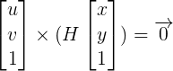
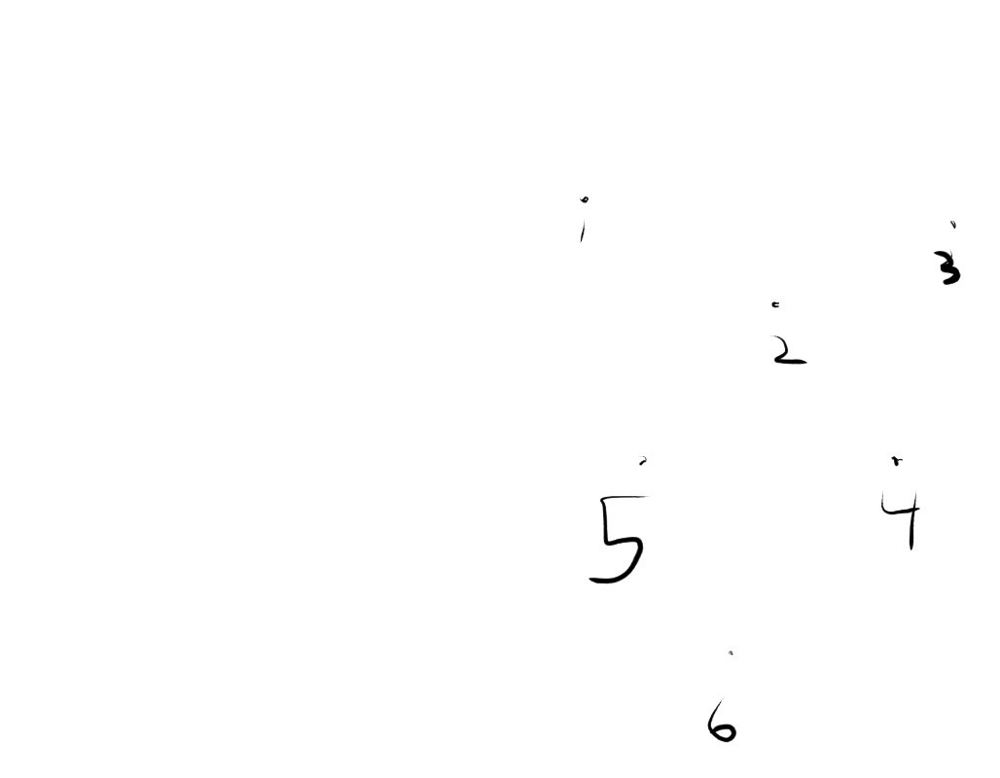
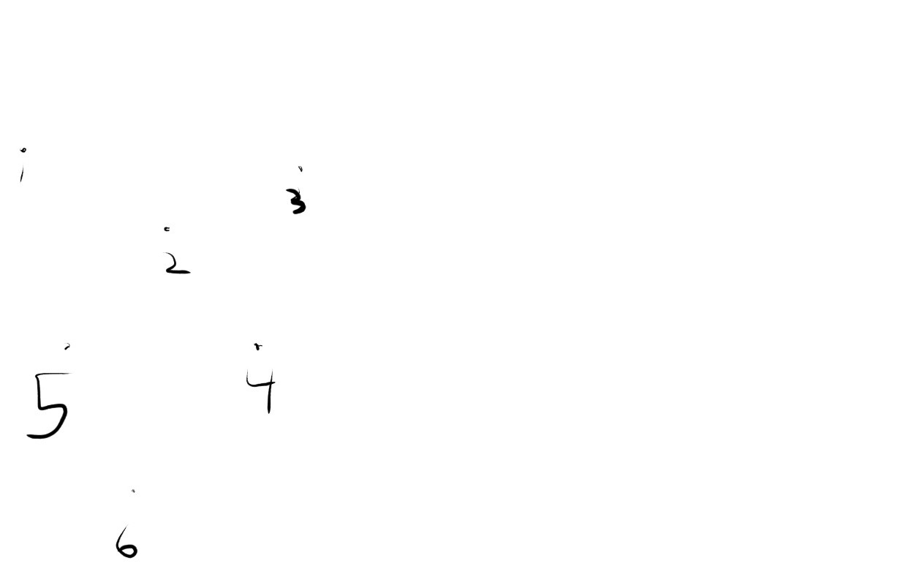

Panorama Stitching
The Method
The goal in this assignment was to manually select corresponding points from two images that form a panorama. From these points, we use homogoenous coordinates and the definition of cross product to solve for a homography matrix. We then apply the homography matrix to the images using imtransform.
The high level methodology for achieving this involved 3 main steps:
-
Manually select correspondence points
(xi, yi) and (uv, xi)from each image. -
Construct a 3x3 homography matrix
Hbased on the equation:- 
-
From this, we find the cross product to be:

-
Next, we rewrite this as
.gif)
-
Finally, we construct
M, use the matlab\operater to solve for thehvector, and reshape thehvector into a 3x3Hmatrix.
-
Apply the
Hmatrix to the two input images.
Implementation
Method
-
After loading the two source images, I begin by prompting the user for points in each image. I organize the points from each image into an
nx2matrix. -
Next, I call a function
calculateH(points1, points2). I will discuss its implementation later. -
The final step is to apply the
Hmatrix to the images by transformingHinto atformstructure usingT = maketform('projective', inv(H))and then useimtransform.-
After working on this step for several days, I was unable to achieve a proper transformation. Using
Handinv(H)both yielded similar results:-
H = calculateH(points1, points2);
T = maketform('projective', inv(H));
image2_transformed = imtransform(image2, T);
Yields an image that is 2x2 pixels. -
H = calculateH(points1, points2);
T = maketform('projective', inv(H));
% obtain x and y data
[~, x_data, y_data] = imtransform(image2, T, 'XYScale', 1);
% update x/y data from the bounds
x_data = [min(1, x_data(1)), max(size(image1,2), x_data(2))];
y_data = [min(1, y_data(1)), max(size(image1,1), y_data(2))];
image2_transformed = imtransform(image1, T, 'XData', x_data, 'YData', y_data);
figure, imagesc(image2_transformed);
axis image;
Yields an image that is entirely black, but one that is the correct size.
-
-
After working on this step for several days, I was unable to achieve a proper transformation. Using
 
The homography matrix is as follows and it does indicate a lateral translation.

Attempting to apply the H matrix to the second image yields the following result:
Implementation of calculateH
Method
The method of implementation follows the comments and the description of the mathematical method above.
Conclusion
I sucessfully implemented the collection of points from the user and the calculation of the homography matrix H. From calibration images, I have verified that H is calculated correctly.
However, after several days of tinkering, reading documentation, and reading forum posts, I was unable to apply the transform to the images. I chose to turn the assignment in as-is considering that it was already late. That being said, I do plan on continuing to try to get this 100% functional.